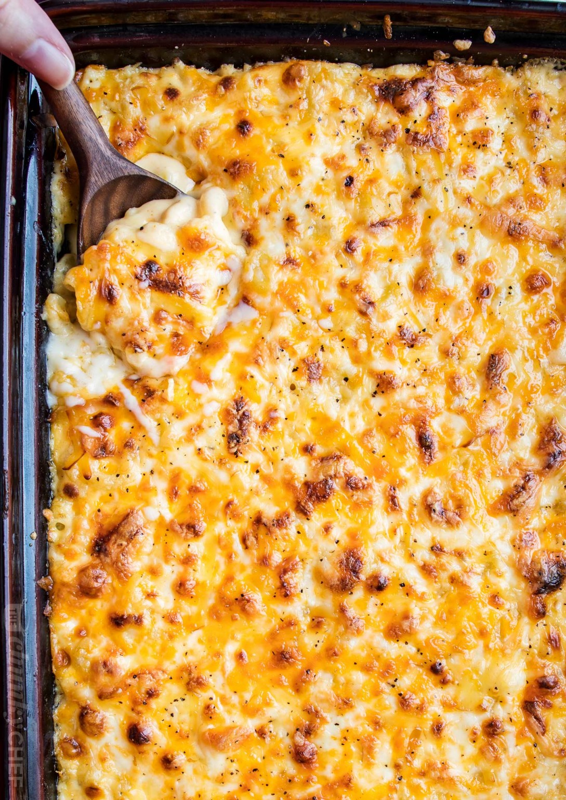

Creamy Baked Mac and Cheese
Description
This baked mac and cheese is a family favorite recipe, loved by both children and adults. It uses a combination of cheeses, layered in the dish as well as melted into a rich and creamy cheese sauce, for the ultimate in cheesy deliciousness! Perfect for a comforting dinner or as a holiday side dish!
Different Toppings
I’m a huge fan of the cheese layer on top, since it gets nice and crispy, but we also love tossing 1 cup of panko with 2 Tbsp of melted butter and using that as a topping. 1 cup of crushed Ritz crackers with 2 Tbsp of butter work amazingly well too!
Ingredients
- 1 lb. dried elbow pasta
- 1/2 cup unsalted butter
- 1/2 cup all purpose flour
- 1/2 cup all purpose flour
- 1 1/2 cups whole milk
- 2 1/2 cups half and half
- 4 cups grated medium sharp cheddar cheese divided (measured after grating)
- 2 cups grated Gruyere cheese divided (measured after grating)
- 1/2 Tbsp. salt
- 1/2 tsp. black pepper
- 1/2 tsp. black pepper
Steps
- Preheat oven to 325 degrees F and grease a 3 qt baking dish (9x13"). Set aside.
- Bring a large pot of salted water to a boil. When boiling, add dried pasta and cook 1 minute less than the package directs for al dente. Drain and drizzle with a little bit of olive oil to keep from sticking.
- While water is coming up to a boil, grate cheeses and toss together to mix, then divide into three piles. Approximately 3 cups for the sauce, 1 1/2 cups for the inner layer, and 1 1/2 cups for the topping.
- Melt butter in a large saucepan over MED heat. Sprinkle in flour and whisk to combine. Mixture will look like very wet sand. Cook for approximately 1 minute, whisking often. Slowly pour in about 2 cups or so of the milk/half and half, while whisking constantly, until smooth. Slowly pour in the remaining milk/half and half, while whisking constantly, until combined and smooth.
- Continue to heat over MED heat, whisking very often, until thickened to a very thick consistency. It should almost be the consistency of a semi thinned out condensed soup.
- Remove from the heat and stir in spices and 1 1/2 cups of the cheeses, stirring to melt and combine. Stir in another 1 1/2 cups of cheese, and stir until completely melted and smooth.
- In a large mixing bowl, combine drained pasta with cheese sauce, stirring to combine fully. Pour half of the pasta mixture into the prepared baking dish. Top with 1 1/2 cups of grated cheeses, then top that with the remaining pasta mixture.
- Sprinkle the top with the last 1 1/2 cups of cheese and bake for 15 minutes, until cheesy is bubbly and lightly golden brown.